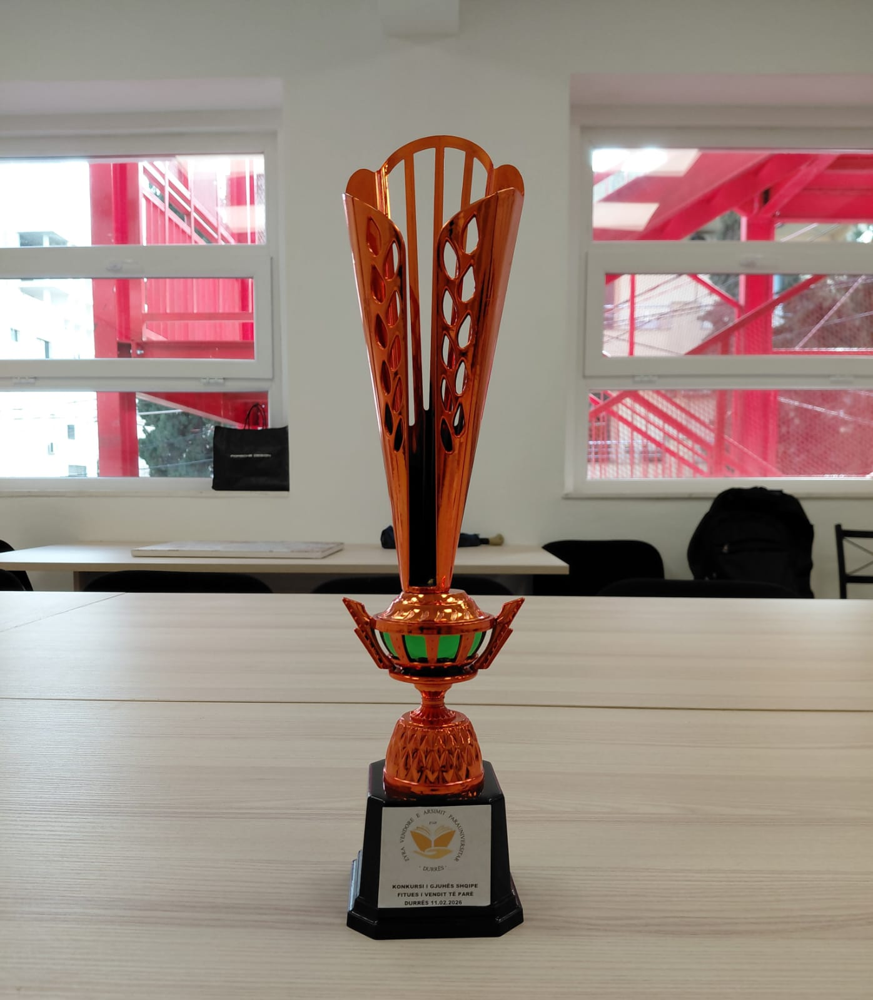
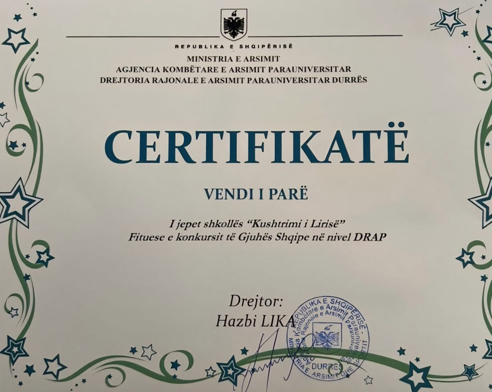

Kjo faqe është krijuar si një platformë edukative ndërvepruese në shërbim të nxënësve të klasave VI–IX, me synimin për të përforcuar dhe thelluar njohuritë në lëndën e gjuhës shqipe përmes ndërthurjes së metodave bashkëkohore të mësimnxënies me teknologjinë digjitale.
Projekti u realizua gjatë muajve janar–shkurt 2026 nga një ekip i përbërë nga gjashtë nxënës, nën drejtimin e mësueses së gjuhës shqipe, Etleva Vezi. Puna në grup, përkushtimi dhe fryma bashkëpunuese përbëjnë shtyllat kryesore në ndërtimin dhe finalizimin me sukses të këtij projekti.
Më 11 shkurt 2026, projekti u vlerësua me vendin e parë nga DAR Durrës, në kuadër të Konkursit Kombëtar të Gjuhës Shqipe, duke dëshmuar cilësinë dhe ndikimin e tij në përmirësimin e procesit mësimor. Më 16 shkurt 2026, shkolla vlerësohet me vendin e parë edhe nivel DRAP, një vlerësim për arritjet, profesionalizmin në zbatimin e projektit dhe kontributin në zhvillimin e kompetencave gjuhësore dhe digjitale të nxënësve.
Faqja ofron kuize me vlerësim të menjëhershëm duke nxitur mësimin aktiv dhe vetëvlerësimin. Kjo faqe shërben si një mjet praktik dhe funksional, i përdorshëm si në mjedisin e klasës, ashtu edhe për studim të pavarur jashtë saj.
Misioni ynë është të ndërthurim traditën e pasur të gjuhës shqipe me risitë e teknologjisë digjitale duke ofruar një përvojë mësimore cilësore, motivuese dhe gjithëpërfshirëse në përputhje me standardet e arsimit bashkëkohor.
Për çdo sugjerim, propozim bashkëpunimi apo informacion shtesë, ju lutemi të na kontaktoni në adresën zyrtare të institucionit:
Shkolla “Kushtrimi i lirisë”, Durrës
Drejtore e shkollës: Rezarta Gjergji
Posta elektronike e shkollës: kushtrimiliris9vj@yahoo.com
Facebook-u i shkollës: Shkolla 9-vjeçare "Kushtrimi i lirisë" Durrës

